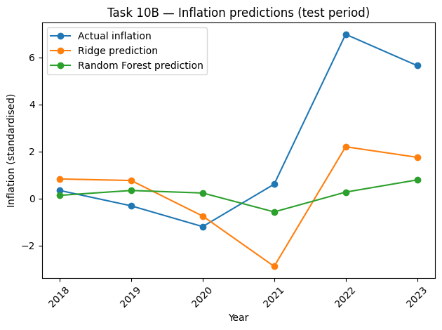

Task 1: Hosting. Display charts in your own site
Two charts from Richard Davies' library were integrated.
Task 2: Building. Create your own visualisations
Two charts were developed using the Economics Observatory Data Hub.
Task 3: Debating. Use a visualisation in economic/policy commentary
Renewables are expanding, but price volatility and grid constraints remain.
Task 4: Replication. Re-create, then improve, someone else's chart
Original Chart

Replicated Version
Improved Version
Task 5: Accessing data: Scraper and API
Part A: API chart
Part B: Scraped chart
Task 6: Loops. Build a dashboard
Task 7: Maps. Base maps and choropleths
A choropleth map of Scotland and a coordinates map of Wales.
Task 8: Big Data. Extracting a story from millions of prices
Task 9: Two interactive charts
Task 10: Advanced Analysis and Machine Learning
